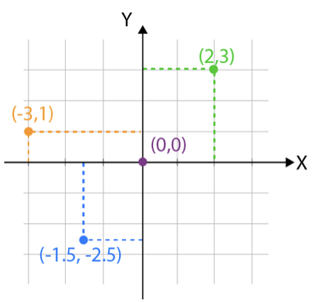
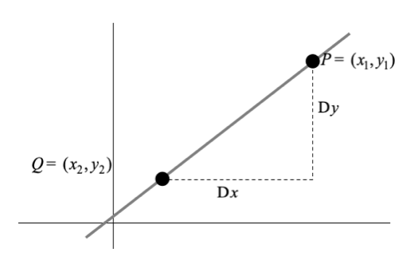
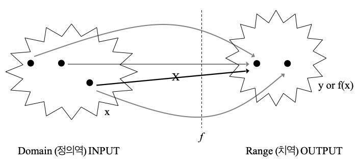
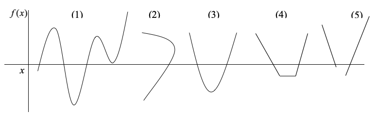

수학의 기초 1. 함수
chapter 1. 기초
1. 함수와 통계학
함수는 통계학에서 데이터를 설명하고 모델링하는 수단이며, 이론적 개념을 수학적으로 표현하는 핵심 도구이다. 데이터 간의 관계를 나타내고, 확률분포, 추정, 검정 등 다양한 통계 기법에서 필수적인 역할을 수행한다.
통계함수
통계함수는 독립변수(\(x\))와 종속변수(\(y\)) 데이터 간 관계를 설명한다. \(y = f(x) + e\)로 표현되며 \(e\)는 오차항이다.
확률밀도함수
확률밀도함수 \(p(x)\)는 확률변수의 확률이 함수값이다.
기대값
확률변수의 평균적인 값이다. \(E(X) = \sum xp(x)\)
2. 함수와 시리즈
시리즈는 복잡한 함수를 단순한 다항식으로 근사하거나, 함수의 특성을 분석하는 데 사용된다. 시리즈는 유한하거나 무한한 항들로 이루어진 수열의 합으로 정의된다.
유한 시리즈: \(S_{n} = {\sum_{i = 1}^{n}}a_{k}\)
무한 시리즈: \(S_{\infty} = {\sum_{i = 1}^{\infty}}a_{k}\)
이항시리즈 binomial series
\[(a + b)^{n} = a^{n} + \binom{n}{1}a^{n - 1}b + ... + \binom{n}{n - 1}ab^{n - 1} + b^{n}\]
특수한 경우
\[\frac{1}{(1 + x)^{2}} = - 1 + 2x - 3x^{2} + 4x^{3} - ...\]
\[\frac{1}{1 + x} = 1 - x + x^{2} - x^{3} + x^{4} - ...\]
지수시리즈 exponential series
\[e^{x} = 1 + x + \frac{x^{2}}{2!} + \frac{x^{3}}{3!} + ...\]
\[e^{x} = lim_{n \rightarrow}^{\infty}(1 + \frac{x}{n})^{n}\]
\[ln(1 + x) = x - \frac{{}^{2}}{2} + \frac{x^{3}}{3} - \frac{x^{4}}{4} + ..., - 1 < x < 1\]
산술시리즈 arithmetic series
\[S_{n} = a + (a + d) + (a + 2d) + \cdots + \lbrack a + (n - 1)d\rbrack\]
- \(a\): 첫 번째 항, \(d\): 공차(항 사이의 일정한 차이), \(n\): 항의 개수
\[S_{n} = \frac{n}{2}\lbrack 2a + (n - 1)d\rbrack\]
기하시리즈 geometric series
\[S_{n} = a + ar + ar^{2} + \cdots + ar^{n - 1}\]
- \(a\): 첫 번째 항, \(r\): 공비(항 사이의 일정한 차이)
\[S_{n} = \frac{a(1 - r^{n})}{1 - r},r \neq 1\]
무한 기하시리즈: \(S_{n} = \frac{a}{1 - r}, - 1 < r < 1\)
3. 통계학 주요상수
지수 exponent \(e\)
자연로그 함수의 밑으로 정의되며, 무한 급수로 표현된다.
\(e \approx 2.71828182845904\ldots\)(무리수)
통계학의 주요 확률분포함수(정규분포, 포아송분포)의 항이다.
자연상수 \(ln2\)
\[\ln 2 \approx 0.69314718056\ldots \text{(무리수)}\]
정보 이론: 1비트의 정보. 이진수 체계와 로그 연산.
황금비 \(\phi \approx 1.61803398874989\ldots\)
\(a/b = (a + b)/a\)를 만족하는 비율 \(\phi = \frac{1 + \sqrt{5}}{2}\)
오일러상수
조화급수와 자연로그의 차이로 정의된다.
\[\gamma = \lim_{n \rightarrow \infty}\left( \overset{n}{\sum_{k = 1}}\frac{1}{k} - \ln n \right) \approx 0.577215664901532\ldots\]
기호
| 소문자 | α | β | γ | δ | ε | ζ | η | θ |
| 대문자 | Α | Β | Γ | Δ | Ε | Ζ | Η | Θ |
| 발음 | alpha | beta | gamma | delta | epsilon | zeta | eta | theta |
| 소문자 | ι | κ | χ | λ | μ | ν | ξ | ο |
| 대문자 | Ι | Κ | Χ | Λ | Μ | Ν | Ξ | Ο |
| 발음 | iota | kappa | chi | lambda | mu | nu | xi(ksi) | omicron |
| 소문자 | π | ρ | σ | τ | υ | ϕ | ψ | ω |
| 대문자 | Π | Ρ | Σ | Τ | Υ | Φ | Ψ | Ω |
| 발음 | pi | rho | sigma | tau | upsilon | phi | psi | omega |
chapter 2. 좌표와 직선방정식
1. 이차원평면과 데카르트 좌표

이차원 평면에서 모든 점은 숫자 좌표로 coordinate 표현할 수 있으며, 점들의 집합으로 이루어진 선이나 곡선은 좌표방정식으로 나타낼 수 있다. 이를 위해 이차원 평면에는 두 개의 직선이 설정된다.. 수평선인 \(x\)-축 axis과 수직선인 \(y\)-축이다. 이 두 직선은 원점에서 직각으로 교차하며, 원점은 두 축의 기준점이 된다.
원점을 기준으로 \(x\)-축에서 \(a\)만큼, \(y\)-축에서 \(b\)만큼 떨어진 점의 좌표는 \((a,b)\)로 표기된다. 이러한 표기 방식은 데카르트 좌표라고 한다. 여기서 \(a\)와 \(b\)는 각각 \(x\)-좌표와 \(y\)-좌표를 나타내며, 이 값들은 모두 실수 값으로 구성된다.
데카르트 Cartesian 좌표계는 이차원 평면에서 점의 위치를 명확하고 직관적으로 나타내는 데 사용되며, 수학적 분석 및 응용의 기초가 된다. 이를 활용하면 점, 선, 곡선, 그리고 다양한 기하학적 형태를 방정식으로 표현하고, 이를 통해 여러 문제를 해결할 수 있다.
2. 직선과 증가
직선
두 점을 가장 짧은 거리로 연결하는 선을 직선이라고 한다. 직선은 두 점 사이의 최단 경로로 정의되며, 그 위에는 무수히 많은 점이 존재한다. 좌표평면에서 직선은 중요한 기하학적 구조로, 점과 점 사이의 관계를 나타내는 기본 도구이다.
증가량 (Increment)

좌표평면에서 두 점 \((x_{1},y_{1})\)과 \((x_{2},y_{2})\)의 이동을 고려할 때, x-좌표와 y-좌표의 변화량을 각각 증가량이라고 한다.
x-좌표의 증가량: \(\Delta x = x_{2} - x_{1}\)
y-좌표의 증가량: \(\Delta y = y_{2} - y_{1}\)
증가량의 부호와 크기는 두 점의 좌표 차이에 의해 결정되며, x-좌표나 y-좌표의 변화 방향을 나타낸다.
기울기 slope
증가량은 두 점을 지나는 직선의 기울기를 계산하는 데 활용된다. 기울기 m은 두 점 사이의 x-좌표의 증가량에 대한 y-좌표의 증가량의 비율로 정의되며, 다음과 같은 식으로 표현된다:
\[m = \frac{\Delta y}{\Delta x} = \frac{y_{2} - y_{1}}{x_{2} - x_{1}},\Delta x \neq 0\]
- \(m > 0\): 직선이 오른쪽으로 올라간다.
- \(m < 0\): 직선이 오른쪽으로 내려간다.
- \(m = 0\): 직선이 수평이다.
- \(m\)이 정의되지 않음 (\(\Delta x = 0\)): 직선이 수직이다.
수평 parallel과 수직 perpendicular
두 직선 \(L_{1}\)과 \(L_{2}\)의 기울기가 동일하면, 즉 \(m_{1} = m_{2}\)이면 두 직선은 서로 평행 하다고 한다. 이 경우, 두 직선은 교차하지 않으며, 동일한 방향으로 뻗어 있다.
두 직선 \(L_{1}\)과 \(L_{3}\)의 기울기의 곱이 -1이면, 즉 \(m_{1} \cdot m_{2} = - 1\)이면 두 직선은 서로 수직하다고 한다. 이는 두 직선이 교차할 때 \(90^{\circ}\)의 각을 이루는 경우이다.
3. 직선 방정식 linear equation
직선 방정식은 직선 위의 모든 점의 좌표를 만족하며, 직선 이외의 점의 좌표에서는 만족하지 않는 방정식이다. 좌표평면에서 직선은 절편 intercept과 기울기 slope를 이용해 다음과 같은 일반적인 형태로 표현된다. \(y = bx + a\)
- \(b\): 직선의 기울기, \(a\): y-축과 교차하는 절편
직선 구성요소
기울기 \(b\)는 직선이 얼마나 가파르게 증가하거나 감소하는지를 나타내며, x-좌표의 변화량에 대한 y-좌표의 변화량의 비율로 정의된다:
\[b = \frac{\Delta y}{\Delta x}\]
- b > 0: 직선이 오른쪽으로 올라간다.
- b < 0: 직선이 오른쪽으로 내려간다.
- b = 0: 직선이 수평이다.
절편 a는 직선이 y-축과 만나는 점의 y-좌표를 나타낸다. x = 0일 때, 직선 방정식에서 y = a가 된다.
수평선 horizontal line
기울기 b = 0인 경우, 직선은 수평선이 된다. 이러한 직선의 방정식은 \(y = a\)이다. 이 직선은 x-축과 평행하며, y-축 상에서 y = a를 지난다.
수직선 vertical line
y-축과 평행한 직선의 방정식으로 \(x = c\)이다. 이 직선은 x-축과 x = c에서 교차한다. 기울기가 정의되지 않으며, 수직선은 y-축과 항상 평행하다.
chapter 3. 함수란?
1. 함수 정의
함수는 두 집합 사이의 특정 규칙에 따라 값을 대응시키는 관계를 나타낸다. 함수는 정의역과 치역으로 구성되며, 정의역의 각 원소에 대해 치역의 단 하나의 원소만 대응된다. 이를 통해 y가 x에 의해 결정된다고 표현하며, 수학적으로 다음과 같이 나타낸다. \(y = f(x)\)
이는 ”y는 x의 함수이다”라고 읽는다.

정의역 domain
정의역은 함수에서 x가 가질 수 있는 값들의 집합을 말한다. 즉, 함수 f(x)가 유효하게 정의될 수 있는 모든 입력값의 집합이다.
치역 range
치역은 함수가 출력할 수 있는 값들의 집합이다. 정의역의 원소 x가 함수 f를 통해 출력되는 값 y = f(x)의 모임이 치역이다.
대응 규칙
함수는 정의역의 각 원소를 치역의 한 원소에 대응시키는 규칙을 가지고 있다. 각 정의역의 값 x는 치역에서 정확히 하나의 값 y에 대응해야 한다. (2)번은 동일 x-값에 대하여 2개 y-값이 대응되므로 함수가 아니고 다른 모든 것은 함수이다.

2. 우함수와 기함수
우함수 even function
함수 \(f(x)\)가 다음 조건을 만족하면 우함수라 한다:
\[f( - x) = f(x)\text{모든}x \in \text{정의역(domain)}\]
우함수는 y-축을 기준으로 대칭적이다. 즉, 그래프의 왼쪽 부분을 y-축을 따라 접으면 오른쪽 부분과 정확히 일치한다.
기함수 odd function
함수 \(f(x)\)가 다음 조건을 만족하면 기함수라 정의한다:
\[f( - x) = - f(x)\text{모든}x \in \text{정의역(domain)}\]
기함수는 원점을 기준으로 대칭적이다. 즉, 그래프를 원점을 중심으로 180° 회전시키면 동일한 모양이 된다.
3. 함수 종류
(1) 함성함수 Composite Function
합성함수는 두 함수 f(x)와 g(x)가 주어졌을 때, 함수 g(x)의 출력값이 함수 f(x)의 입력값으로 사용되는 새로운 함수이다. 이를 다음과 같이 나타낸다. \((f \circ g)(x) = f(g(x))\)
- g(x): 먼저 적용되는 함수.
- f(x): g(x)의 출력값을 입력값으로 사용하는 함수.
- \((f \circ g)(x)\): f(x)와 g(x)의 합성함수.
합성함수 \((f \circ g)(x)\)의 정의역은 g(x)와 f(x)가 동시에 유효하게 정의되는 입력값으로 구성된다. 즉, x는 g(x)의 정의역에 속하고, g(x)의 출력값은 f(x)의 정의역에 속해야 한다.
\((f \circ g)(x)\)는 다음 두 단계를 거친다:
- 먼저 x에 대해 g(x)를 계산하고 그런 다음, f(x)에 g(x)를 대입하여 f(g(x))를 계산한다.
\[f(x) = 2x + 1,g(x) = x^{2}\]
\[f(g(x)) = f(x^{2}) = 2x^{2} + 1\]
\[g(f(x)) = g(2x + 1) = (2x + 1)^{2}\]
(2) 절대값 함수
숫자 x의 절대값(absolute value)은 x의 크기(거리를 나타냄)를 의미하며, 항상 0 이상의 값을 가진다. 절대값은 다음과 같이 정의된다.
\[|x| = \{\begin{matrix} x, & \text{if}x \geq 0 \\ - x, & \text{if}x < 0 \end{matrix}\]
절대값은 숫자 x와 0 사이의 거리로 해석된다. 절대값의 결과는 항상 양수이거나 0이다.
(3) 정수함수 integer function
정수 함수는 숫자 x를 넘지 않는 최대 정수를 반환하는 함수이다. 이를 바닥함수 floor function라고도 하며, 다음과 같이 정의된다.
\[\lfloor x\rfloor = \text{최대 정수}n\text{such that}n \leq x\]
- \(\lfloor x\rfloor\): x를 넘지 않는 가장 큰 정수.
- \(\lfloor x\rfloor\)는 항상 \(n \leq x < n + 1\)을 만족한다.
4. 함수의 사칙연산
두 함수 f(x)와 g(x)가 주어졌을 때, 이들 함수에 대해 덧셈, 뺄셈, 곱셈, 나눗셈과 같은 사칙연산을 정의할 수 있다. 각 연산은 정의역에서 두 함수의 값에 기반하여 계산된다.
함수의 덧셈/뺄셈
\[(f \pm g)(x) = f(x) \pm g(x)\]
정의역: f(x)와 g(x)가 동시에 정의된 구간.
결과: f(x)의 값과 g(x)의 값을 더한(뺀) 결과.
함수의 곱셈
\[(f \cdot g)(x) = f(x) \cdot g(x)\]
정의역: f(x)와 g(x)가 동시에 정의된 구간.
결과: f(x)와 g(x)의 값을 곱한 결과.
함수의 나눗셈
\[\left( \frac{f}{g} \right)(x) = \frac{f(x)}{g(x)},g(x) \neq 0\]
정의역: f(x)와 g(x)가 동시에 정의되고, \(g(x) \neq 0\)인 구간.
결과: f(x)의 값을 g(x)의 값으로 나눈 결과.
chapter 4. 함수의 응용 및 극한
1. 함수의 통계 응용
(1) 확률밀도함수 \(f(x)\)
연속형확률변수의 분포를 나타내는 함수로, 특정 구간 내에서 값이 나타날 확률의 상대적인 가능성을 표현한다.
- 확률밀도함수 정의: \(f(x) \geq 0,\int_{- \infty}^{\infty}f(x)dx = 1\)
- 정규분포의 확률밀도함수: \(f(x) = \frac{1}{\sqrt{2\pi\sigma^{2}}}e^{- \frac{(x - \mu)^{2}}{2\sigma^{2}}}\)
- 데이터의 분포, 확률 계산 \(P(a \leq X \leq b) = \int_{a}^{b}f(x)dx\)
(2) 누적확률밀도함수
확률변수가 특정 값 이하일 확률을 나타내는 함수이다.
누적확률밀도함수 정의: \(F(x) = P(X \leq x) = \int_{- \infty}^{x}f(t)dt\)
정규분포 CDF: \(F(x) = \frac{1}{2}\left\lbrack 1 + \text{erf}\left( \frac{x - \mu}{\sqrt{2}\sigma} \right) \right\rbrack\)
분위수 결정: \(P(X \leq x_{p}) = p\) 만족하는 \(X_{p}\)를 찾음.
(3) 회귀모형
함수는 독립변수와 종속변수 간의 관계를 모델링하는 데 사용된다. 회귀모형은 함수 형태로 데이터의 추세를 설명한다.
- 선형회귀: \(y = \beta_{0} + \beta_{1}x + \epsilon\)
- 비선형 회귀: \(y = ae^{bx} + \epsilon\)
- 변수 간 관계 분석, 예측 모델 구축
(4) 생존분석
생존분석에서는 생존시간 분포를 분석하는 데 함수가 사용된다.
생존survival 함수: \(S(t) = P(T > t) = 1 - F(t)\)
위험hazard 함수: \(h(t) = \frac{f(t)}{S(t)}\)
제품 수명 분석, 의료 데이터에서 생존 확률 평가
(5) 시계열분석
함수는 시간에 따른 데이터의 변화를 모델링하고 분석하는 데 사용된다.
자기회귀 모델: \(X_{t} = \phi_{1}X_{t - 1} + \phi_{2}X_{t - 2} + \cdots + \epsilon_{t}\)
주식 시장 예측, 온도 변화 모델링.
(6) 함수와 몬테카를로 시뮬레이션
함수는 확률 분포로부터 난수를 생성하여 복잡한 통계 문제를 해결하는 데 사용된다.
- \(\pi\) 값 추정: \(f(x) = \sqrt{1 - x^{2}},\text{for}x \in \lbrack 0,1\rbrack\)
2. 함수의 극한
(1) 극한 정의
임의의 \(\varepsilon > 0\)가 주어졌을 때, 모든 \(x\)가 특정 값 \(a\)에 충분히 가까워질 때 \((0 < |x - a| < \delta),f(x)\)가 특정 값 \(L\)에 가까워진다면, 함수 \(f(x)\)의 극한은 존재하며 그 극한값은 \(L\)이라고 정의한다. 이를 수학적으로 표현하면 \(\lim_{x \rightarrow a}f(x) = L\) 이다.
\(\varepsilon\): \(f(x)\)와 \(L\)사이의 허용 오차.
\(\delta\): \(x\)와 \(a\) 사이의 거리 제한.
엄밀한 정의 (\(\varepsilon - \delta\)정의)\(\forall\varepsilon > 0,\exists\delta > 0\text{such that}0 < |x - a| < \delta \Longrightarrow |f(x) - L| < \varepsilon\)이 의미는 \(x\)와 \(a\)에 충분히 가까워지면 \((|x - a| < \delta)\) 함수 \(f(x)\)의 값이 \(L\)에 충분히 가까워짐 \((|f(x) - L| < \varepsilon)\)을 보장한다.
(2) 함수값과 극한값
함수값 \(f(a)\)는 함수가 특정 점 \(x = a\)에서 실제로 가지는 값이다. 반면, 극한값 \(\lim_{x \rightarrow a}f(x)\)는 \(x\)가 \(a\)에 가까워질 때 \(f(x)\)가 수렴하는 값을 나타낸다. 함수값과 극한값은 다를 수 있으며, 함수가 \(x = a\)에서 정의되지 않아도 극한값은 존재할 수 있다.
함수값 \(f(a) = k\)
함수가 \(x = a\)에서 정의되어 있다면 \(f(a)\)는 \(k\), 특정 값을 가진다.
극한값
극한값은 좌극한(left-hand limit)과 우극한(right-hand limit)에 따라 달라질 수 있다:
- 좌극한 \(L_{2}\): \(\lim_{x \rightarrow a^{-}}f(x) = L_{2}\)
- 우극한 \(L_{1}\): \(\lim_{x \rightarrow a^{+}}f(x) = L_{1}\)
- 전체 극한은 좌극한과 우극한이 동일할 때 존재한다,
(3) 연속함수 정의
함수 \(f(x)\)가 \(x = a\)에서 연속하려면 다음 세 가지 조건을 모두 만족해야 한다:
1. \(f(a)\)가 정의되어 있어야 한다.
2. \(\lim_{x \rightarrow a}f(x)\)가 존재해야 한다.
3. 함수값과 극한값이 일치해야 한다. \(\lim_{x \rightarrow a}f(x) = f(a)\)
(4) 극한 계산 규칙
상수함수의 극한
\(\lim_{x \rightarrow a}c = c\), 상수 함수의 극한은 상수 자신이다.
항등함수의 극한
\[\lim_{x \rightarrow a}x = a\]
선형성
극한 연산은 선형성을 가진다:
\[\lim_{x \rightarrow a}\lbrack f(x) \pm g(x)\rbrack = \lim_{x \rightarrow a}f(x) \pm \lim_{x \rightarrow a}g(x)\]
곱셈
두 함수의 곱의 극한은 각 함수의 극한의 곱과 같다.
\[\lim_{x \rightarrow a}\lbrack f(x) \cdot g(x)\rbrack = \left( \lim_{x \rightarrow a}f(x) \right) \cdot \left( \lim_{x \rightarrow a}g(x) \right)\]
나눗셈
두 함수의 나눗셈의 극한은 각 함수의 극한의 나눗셈과 같다 (분모가 0이 아닌 경우)
\[\lim_{x \rightarrow a}\frac{f(x)}{g(x)} = \frac{\lim_{x \rightarrow a}f(x)}{\lim_{x \rightarrow a}g(x)},\lim_{x \rightarrow a}g(x) \neq 0\]
거듭제곱
\(\lim_{x \rightarrow a}\lbrack f(x)\rbrack^{n} = \left( \lim_{x \rightarrow a}f(x) \right)^{n}\), 여기서 \(n\)은 정수이다.
루트
\[\lim_{x \rightarrow a}\sqrt[n]{f(x)} = \sqrt[n]{\lim_{x \rightarrow a}f(x)},\text{if}\lim_{x \rightarrow a}f(x) \geq 0\]
합성함수의 극한 (연쇄법칙)
만약 \(g(x)\)의 극한이 \(a\)로 접근할 때 \(b\)이고, \(f(x)\)가 \(b\)에서 연속이면
\(\lim_{x \rightarrow a}f(g(x)) = f\left( \lim_{x \rightarrow a}g(x) \right)\) 이다.
L’Hôpital’s Rule의 정의
함수 f(x)와 g(x)가 x \to a에서 각각 0/0 형태 또는 \infty/\infty 형태를 가지는 경우, 두 함수의 극한은 다음과 같이 계산할 수 있다:
\[\lim_{x \rightarrow a}\frac{f(x)}{g(x)} = \lim_{x \rightarrow a}\frac{f'(x)}{g'(x)},\text{if}\lim_{x \rightarrow a}\frac{f'(x)}{g'(x)}\text{exists.}\]
형태: \(\frac{0}{0}\) 또는 \(\frac{\infty}{\infty}\)와 같은 불정형 형태를 가져야 한다.
미분 가능성: \(f(x)\)와 \(g(x)\)는 \(x \rightarrow a\)에서 미분 가능해야 한다.
분모의 도함수가 0이 아님: \(g'(x) \neq 0\)인 구간에서 적용 가능
\(\frac{0}{0}\) 형태: \(\lim_{x \rightarrow 0}\frac{\sin(x)}{x} = \lim_{x \rightarrow 0}\frac{\cos(x)}{1} = \cos(0) = 1\)
\(\frac{\infty}{\infty}\) 형태: \(\lim_{x \rightarrow \infty}\frac{x}{e^{x}} = \lim_{x \rightarrow \infty}\frac{1}{e^{x}} = 0\)
무한대 있는 극한
\(x\)가 무한대 \(\infty\)혹은 \(- \infty\)로 접근할 때 함수 \(f(x)\)의 극한을 구하는 규칙이다.
\[lim_{x \rightarrow \pm \infty}\frac{1}{x} = 0\]
\(lim_{x \rightarrow \pm \infty}c = c\), \(c\)는 상수
함수가 분수의 형태를 가지면 분모의 가장 큰 \(x\)차수로 나누고 위의 규칙을 이용하라.
특정 함수의 극한
- 지수 함수: \(\lim_{x \rightarrow \infty}e^{- x} = 0\)
- 삼각 함수: \(\lim_{x \rightarrow 0}\frac{\sin(x)}{x} = 1\), \(\lim_{x \rightarrow 0}\frac{1 - \cos(x)}{x^{2}} = \frac{1}{2}\)
- 로그 함수: \(\lim_{x \rightarrow \infty}\ln(x) = \infty\)
3. 수렴 convergence
수렴의 정의
함수 \(f(x)\) 또는 수열 \(\{ a_{n}\}\)가 특정 값에 수렴한다는 것은 극한값이 존재하며, 일정 값에 점점 가까워진다는 것을 의미한다.
수열의 수렴
수열 \(\{ a_{n}\}\)이 \(L\)로 수렴한다면, 임의의 \(\varepsilon > 0\)에 대해 \(n \geq N\)일 때 다음 조건을 만족하는 \(N\)이 존재한다.
\(|a_{n} - L| < \varepsilon\), 여기서 \(L\)은 수열의 극한값이다.
함수의 수렴
함수 \(f(x)\)가 \(L\)로 수렴하면, \(x \rightarrow a\)에서 \(\lim_{x \rightarrow a}f(x) = L\)
수렴의 성질
수열이나 함수가 수렴하면 극한값은 유일하다.
수렴하는 함수나 수열은 경계값을 가지며, 점점 극한값에 가까워진다.
극한과 수렴의 차이
극한은 특정 값에 접근하는 경향을 나타내며, 함수나 수열이 특정 점에서 어떻게 동작 하는지 설명한다.
수렴은 극한값이 존재하고 일정 값에 점점 가까워지는 성질을 나타낸다.
4. 확률수렴과 분포수렴
(1) 확률수렴 (Convergence in Probability)
확률변수의 열 \(\{ X_{n}\}\)이 확률변수 \(X\)에 확률수렴한다는 것은, 임의의 \(\varepsilon > 0\)에 대해 다음 조건을 만족하는 \(n \rightarrow \infty\)가 존재함을 의미한다. \(\lim_{n \rightarrow \infty}P(|X_{n} - X| \geq \varepsilon) = 0\)
- 표기: \(X_{n}\overset{P}{\rightarrow}X\)
해석
확률적으로 \(|X_{n} - X|\)가 작아질 가능성이 1에 가까워짐을 나타낸다. 즉, \(X_{n}\)과 \(X\)가 점점 ”가까워진다”고 해석할 수 있다.
성질
확률수렴의 유일성: 극한값 \(X\)는 유일하다.
확률수렴과 함수: \(X_{n}\overset{P}{\rightarrow}X\)이고 \(g(x)\)가 연속 함수라면 \(g(X_{n})\overset{P}{\rightarrow}g(X)\)
통계학 응용
추정량의 일치성: 추정량 \({\widehat{\theta}}_{n}\)이 모수 \(\theta\)에 확률수렴하면 \({\widehat{\theta}}_{n}\)은 일치추정량이다. 법칙의 수렴: 큰 수의 약법칙은 확률수렴으로 표현된다:
\[{\overline{X}}_{n}\overset{P}{\rightarrow}\mu\]
(2) 분포수렴 (Convergence in Distribution)
확률변수의 수열 \(\{ X_{n}\}\)이 확률변수 \(X\)에 분포수렴한다는 것은, 모든 연속점 \(x\)에서 누적분포함수(FDF) \(F_{X_{n}}(x)\)가 \(F(x)\)로 수렴함을 의미한다. \(\lim_{n \rightarrow \infty}F_{X_{n}}(x) = F_{X}(x),\forall x\) \(F_{X}(x)\)에서 연속함수.
표기: \(X_{n}\overset{\mathcal{D}}{\rightarrow}X\)
해석
분포수렴은 \(X_{n}\)의 분포가 \(X\)의 분포로 점점 가까워지는 것을 의미한다. 개별적인 실현값이 아니라 분포 전체의 형태를 고려한다.
성질
(1) 연속성: 분포수렴은 누적분포함수의 연속점에서 정의된다.
(2) 함수와 분포수렴: \(X_{n}\overset{\mathcal{D}}{\rightarrow}X\)이고 \(g(x)\)가 연속 함수라면
\(g(X_{n})\overset{\mathcal{D}}{\rightarrow}g(X)\) 이다.
응용
중심 극한 정리: 표본 평균이 정규분포로 수렴하는 현상은 분포수렴으로 나타낸다. \(\sqrt{n}({\overline{X}}_{n} - \mu)\overset{\mathcal{D}}{\rightarrow}N(0,\sigma^{2})\)
(3) 확률수렴과 분포수렴의 관계
확률수렴 → 분포수렴
\[X_{n}\overset{P}{\rightarrow}X \Longrightarrow X_{n}\overset{\mathcal{D}}{\rightarrow}X\]
분포수렴 ≠ 확률수렴
분포수렴이 확률수렴을 보장하지 않는다. 예를 들어, \(X_{n} \sim U( - n,n)\)은 \(X = 0\)에 분포수렴하나 확률수렴하지 않는다.